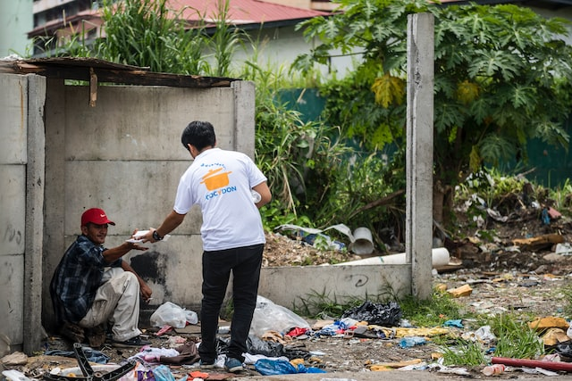
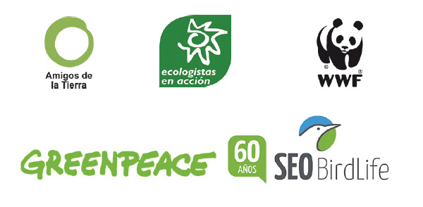
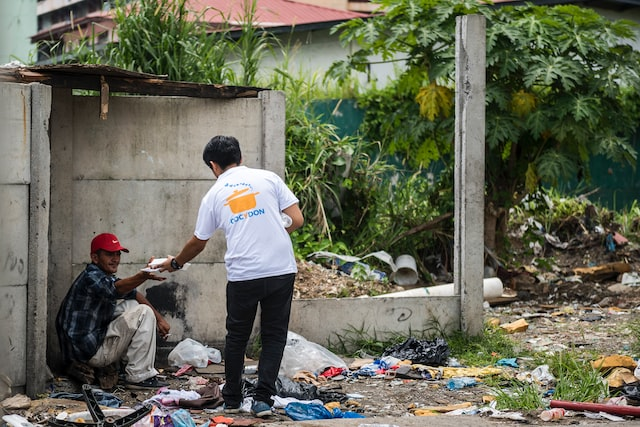
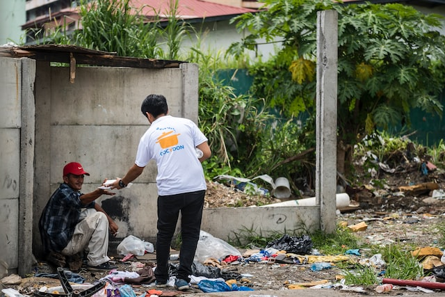

ONG en Aragon
Menú
01 IMAGENES

Menú
03 MULTIMEDIA
Rodajes friendly con la naturaleza:
Reproducir sonido
Música fondo
Menú
04 LISTAS
Test, ¿eres lo suficientemente ecologita para seguir en esta web?
¿Reciclas el plastico en el amarillo o en el marron
En el amarillo soy una persona de bien.
¿Marrón?, de donde eres de la comunitat...
Ahora no te puedo contestar estoy atropellando liebres.
¿Comes verdura?
3 veces a la semana.
De lo que come el grillo, poquillo.
No como otra cosa.
Definiciones verdes.
Medio ambiente
El medio ambiente natural o entorno natural es el conjunto de componentes físicos, químicos y biológicos externos con los que interactúan los seres vivos.
Calentamiento global
En climatología, el calentamiento global o calentamiento mundial es el aumento a largo plazo de la temperatura atmosférica media del sistema climático de la Tierra debido a la intensificación del efecto invernadero
05 ENLACES
Mini MENÚ sitio web
Lista de ONGs
.
IMAGENES
MULTIMEDIA
LISTAS
ENLACES
IMAGEN MAPEADA
Paginas webs de nuestros colaboradores:
Seo Birdlife
Ecologistas en accion
Greenpeace
Nuestras redes sociales
06 IMAGEN MAPEADA

 
